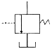
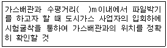

굴삭기운전기능사 (2011-02-13 기출문제)
1. 건설기계기관에서 크랭크 축(crank shaft)의 구성부품이 아닌 것은?
- 크랭크 암(crank arm)
- 크랭크 핀(crank pin)
- 저널(journal)
- 플라이 휠(fly wheel)
(정답률: 69%)

2. 연료분사노즐 테스터기로 노즐을 시험할 때 검사하지 않는 것은?
- 연료분포 상태
- 연료분사 시간
- 연료후적 유무
- 연료분사 개시 압력
(정답률: 55%)
3. 피스톤의 운동방향이 바뀔 때 실린더 벽에 충격을 주는 현상을 무엇이라고 하는가?
- 피스톤 스틱현상
- 피스톤 슬랩현상
- 블로바이 현상
- 슬라이드 현상
(정답률: 64%)
4. 디젤기관의 연소실 방식에서 흡기 가열식 예열장치를 사용하는 것은?
- 직접분사식
- 예연소실식
- 와류실식
- 공기실식
(정답률: 49%)
5. 디젤기관의 노킹 발생 방지 대책에 해당 되지 않는 것은?
- 착화성이 좋은 연료를 사용한다.
- 분사 시 공기온도를 높게 유지한다.
- 연소실 벽 온도를 높게 유지한다.
- 압축비를 낮게 유지한다.
(정답률: 67%)
6. 점도지수가 큰 오일의 온도변화에 따른 점도 변화는?
- 크다.
- 작다.
- 불변이다.
- 온도와는 무관하다.
(정답률: 63%)
7. 디젤기관을 시동시킨 후 충분한 시간이 지났는데도 냉각수 온도가 정상적으로 상승하지 않을 경우 그 고장의 원인이 될 수 있는 것은?
- 냉각팬 벨트 헐거움
- 수온조절기가 열린 채 고장
- 물 펌프의 고장
- 라디에이터코어의 막힘
(정답률: 69%)
8. 기관에서 실린더 마모가 가장 큰 부분은?
- 실린더 아래 부분
- 실린더 윗 부분
- 실린더 중간 부분
- 실린더 연소실 부분
(정답률: 62%)
9. 기관을 시동하기 전에 점검해야 할 사항이 아닌 것은?
- 연료의 량
- 냉각수의 량
- 엔진의 회전수
- 엔진오일의 량
(정답률: 90%)
10. 냉각팬의 벨트 유격이 너무 클 때 일어나는 현상으로 옳은 것은?
- 발전기의 과충전이 발생된다.
- 강한 텐션으로 벨트가 절단된다.
- 기관과열의 원인이 된다.
- 점화시기가 빨라진다.
(정답률: 74%)
11. 엔진오일 압력 경고등이 켜지는 경우가 아닌 것은?
- 오일이 부족할 때
- 오일 필터가 막혔을 때
- 엔진을 급가속 시켰을 때
- 오일 회로가 막혔을 때
(정답률: 78%)
12. 디젤기관에 과급기를 부착하는 주된 목적은?
- 출력의 증대
- 냉각효율의 증대
- 배기 효율의 증대
- 윤활성의 증대
(정답률: 80%)
13. 방향지시등 스위치를 작동할 때 한쪽은 정상이고 다른 한쪽은 점멸 작용이 정상과 다르게(빠르게 또는 느리게)작용한다. 고장 원인이 아닌 것은?
- 전구 1개가 단선 되었을 때
- 플래셔 유닛 고장
- 좌측 전구를 교체할 때 규정 용량의 전구를 사용하지 않았을 때
- 한쪽 전구 소켓에 녹이 발생하여 전압강하가 있을 때
(정답률: 58%)
14. 교류 발전기에서 작동 중 소음 발생 원인으로 가장 거리가 먼 것은?
- 고정 볼트가 풀렸다.
- 벨트 장력이 약하다.
- 베어링이 손상되었다.
- 축전지가 방전되었다.
(정답률: 81%)
15. 축전지 충전 중에 화기를 가까이 하거나 충전상태를 점검하기 위하여 드라이버 등으로 스파크를 시키면 위험한 이유는?
- 축전지 케이스가 타기 때문이다.
- 전해액이 폭발하기 때문이다.
- 축전지 터미널이 손상되기 때문이다.
- 발생하는 가스가 폭발하기 때문이다.
(정답률: 59%)
16. 축전지의 전해액이 빨리 줄어든다. 그 원인과 가장 거리가 먼 것은?
- 축전지 케이스가 손상된 경우
- 과충전이 되는 경우
- 비중이 낮은 경우
- 전압조정기가 불량인 경우
(정답률: 40%)
17. 기동 전동기의 마그넷 스위치는?
- 기동 전동기의 전자석 스위치이다.
- 기동 전동기의 전류 조절기이다.
- 기동 전동기의 전압 조절기이다.
- 기동 전동기의 저항 조절기이다.
(정답률: 66%)
18. 예열 플러그의 작용 시기는 어느 때가 가장 좋은가?
- 냉각수의 양이 많을 때
- 기온이 영하로 떨어졌을 때
- 축전지가 방전 되었을 때
- 축전지가 과 충전 되었을 때
(정답률: 88%)
19. 무한궤도식 건설기계에서 트랙전면에 오는 충격을 완화시키기 위해 설치한 것은?
- 상부 롤러
- 리코일 스프링
- 하부 롤러
- 프론트 롤러
(정답률: 74%)
20. 기중기의 주행 중 점검사항으로 가장 거리가 먼 것은?
- 훅의 걸림 상태
- 주행시 붐의 최고 높이
- 종감속기어 오일량
- 붐과 캐리어의 간격
(정답률: 60%)
21. 로더의 동력조향장치 구성을 열거한 것이다. 적당치 않은 것은?
- 유압펌프
- 복동 유압 실린더
- 제어밸브
- 하이포이드 피니언
(정답률: 67%)
22. 굴삭기로 작업할 때 주의사항으로 틀린 것은?
- 땅을 깊이 팔 때는 붐의 호스나 버킷실린더의 호스가 지면에 닿지 않도록 한다.
- 암석, 토사 등을 평탄하게 고를 때는 선회관성을 이용하면 능률적이다.
- 암 레버의 조작시 잠깐 멈췄다 움직이는 것은 펌프의 토출량이 부족하기 때문이다.
- 작업시는 실린더의 행정 끝에서 약간 여유를 남기도록 운전한다.
(정답률: 64%)
23. 지게차에서 틸트 장치의 역할은?
- 피니언기어 조정
- 차체수평 조정
- 포크 상하 조정
- 마스트 경사 조정
(정답률: 54%)
24. 기관의 플라이휠과 항상 같이 회전하는 부품은
- 압력판
- 릴리스 베어링
- 클러치축
- 디스크
(정답률: 42%)
25. 동력전달 장치에서 토크 컨버터에 대한 설명 중 틀린 것은?
- 조작이 용이하고 엔진에 무리가 없다.
- 기계적인 충격을 흡수하여 엔진의 수명을 연장한다.
- 부하에 따라 자동적으로 변속한다.
- 일정 이상의 과부하가 걸리면 엔진이 정지한다.
(정답률: 47%)
26. 동력조향장치의 장점과 거리가 먼 것은?
- 작은 조작력으로 조향 조작이 가능하다.
- 조향 핸들의 시미 현상을 줄일 수 있다.
- 설계, 제작 시 조향 기어비를 조작력에 관계없이 선정 할 수 있다.
- 조향 핸들 유격조정이 자동으로 되어 볼 죠인트 수명이 반영구적이다.
(정답률: 48%)
27. 노면표시 중 중앙선이 황색 실선과 점선의 복선으로 설치된 때의 설명 중 맞는 것은?
- 어느 쪽에서나 중앙선을 넘어서 앞지르기를 할 수 있다.
- 실선 쪽에서만 중앙선을 넘어서 앞지르기를 할 수 있다.
- 어느 쪽에서나 중앙선을 넘어 앞지르기를 할 수 없다.
- 점선 쪽에서만 중앙선을 넘어 앞지르기를 할 수 있다.
(정답률: 75%)
28. 건널목 안에서 차가 고장이 나서 운행할 수 없게 되었다. 운전자의 조치 사항으로 가장 적절하지 못한 것은?
- 철도 공무 중인 직원이나 경찰 공무원에게 즉시 알려 차를 이동하기 위한 필요한 조치를 한다.
- 차를 즉시 건널목 밖으로 이동시킨다.
- 승객을 하차시켜 즉시 대피 시킨다.
- 현장을 그대로 보존하고 경찰관서로 가서 고장 신고를 한다.
(정답률: 73%)
29. 편도 4차로의 경우 교차로 30미터 전방에서 우회전을 하려면 몇 차로의 진입통행 해야 하는가?
- 2차로와 3차로로 통행한다.
- 1차로와 2차로로 통행한다.
- 1차로로 통행한다.
- 4차로로 통행한다.
(정답률: 85%)
30. 타이어식 건설기계의 좌석안전띠에 대한 내용 중 틀린 것은?
- 30km/h이상의 속도를 낼 수 있는 타이어식 건설기계에는 좌석안전띠를 설치해야 한다.
- 안전띠는 사용자가 쉽게 잠그고 풀 수 있는 구조이어야 한다.
- 안전띠는 ?산업표준화법? 제 15조에 따라 인증을 받은 제품이어야 한다.
- 지게차에는 좌석 안전띠를 설치할 필요가 없다.
(정답률: 87%)
31. 건설기계 등록지를 변경한 때는 등록번호를 시도지사에게 며칠 이내에 반납하여야 하는가?
- 10
- 5
- 20
- 30
(정답률: 61%)
32. 도로교통법상 철길 건널목을 통과할 때 방법으로 가장 적합한 것은?
- 신호등이 없는 철길 건널목을 통과할 때에는 서행으로 통과하여야 한다.
- 신호등이 있는 철길 건널목을 통과할 때에는 건널목 앞에서 일시 정지하여 안전한지의 여부를 확인한 후에 통과하여야 한다.
- 신호기가 없는 철길 건널목을 통과할 때에는 건널목 앞에서 일시 정지하여 안전한지의 여부를 확인한 후에 통과하여야 한다.
- 신호기와 관련 없이 철길 건널목을 통과할 때에는 건널목 앞에서 일시 정지하여 안전한지의 여부를 확인한 후에 통과하여야 한다.
(정답률: 56%)
33. 자동차 제1종 대형면허로 조종할 수 있는 건설기계는?
- 굴삭기
- 불도저
- 지게차
- 덤프트럭
(정답률: 86%)
34. 시.도지사의 정비명령을 이행하지 아니한 자에 대한 벌칙은?
- 30만 원 이하의 벌금
- 100만 원 이하의 벌금 또는 1년 이하의 징역
- 50만 원 이하의 벌금
- 100만 원 이하의 벌금
(정답률: 50%)
35. 자동차의 승차정원에 대한 내용으로 맞는 것은?
- 등록증에 기재된 인원
- 화물자동차 4명
- 승용자동차 4명
- 운전자를 제외한 나머지 인원
(정답률: 81%)
36. 덤프트럭을 신규 등록한 후 최초 정기검사를 받아야 하는 시기는?
- 1년
- 1년 6월
- 2년
- 2년 6월
(정답률: 57%)
37. 작동유의 열화 및 수명을 판정하는 방법으로 적합하지 않는 것은?
- 점도 상태로 확인
- 오일을 가열 후 냉각되는 시간 확인
- 냄새로 확인
- 색깔이나 침전물의 유무 확인
(정답률: 55%)
38. 유압유의 첨가제가 아닌 것은?
- 마모방지제
- 유동점 강하제
- 산화 방지제
- 점도지수 방지제
(정답률: 46%)
39. 압력제어 밸브는 어느 위치에서 작동하는가?
- 탱크와 펌프
- 펌프와 방향전환 밸브
- 방향전환 밸브와 실린더
- 실린더 내부
(정답률: 45%)
40. 유압회로의 설명으로 맞는 것은?
- 유압 회로에서 릴리프 밸브는 압력제어 밸브이다.
- 유압회로의 동력 발생부에는 공기와 믹스하는 장치가 설치되어 있다.
- 유압회로에서 릴리프 밸브는 닫혀 있으며, 규정압력 이하의 오일 압력이 오일 탱크로 회송된다.
- 회로 내 압력이 규정 이상일 때는 공기를 혼입하여 압력을 조절한다.
(정답률: 58%)
41. 다음 유압기호가 나타내는 것은?

- 릴리프 밸브(relief valve)
- 감압 밸브(reducing valve)
- 순차 밸브(sequence valve)
- 무부하 밸브(unload valve)
(정답률: 49%)
42. 유압펌프가 오일을 토출하지 않을 경우, 점검 항목으로 틀린 것은?
- 오일 탱크에 오일이 규정량으로 들어 있는지 점검한다.
- 흡입 스트레이너가 막혀있지 않은지 점검한다.
- 흡입 관로에서 공기가 혼입되는지 점검한다.
- 토출 측 회로에 압력이 너무 낮은지 점검한다.
(정답률: 46%)
43. 유압실린더의 숨돌리기 현상이 생겼을 때 일어나는 현상이 아닌 것은?
- 작동 지연 현상이 생긴다.
- 서지압이 발생한다.
- 오일의 공급이 과대해 진다.
- 피스톤 작동이 불안정하게 된다.
(정답률: 62%)
44. 지게차의 리프트 실린더(lift cylinder) 작동회로에 사용되는 플로우 레귤레이터(슬로우 리턴)밸브의 주된 사용이유는?
- 포크를 천천히 하강하도록 작용한다.
- 포크를 상승시 압력을 높이는 작용을 한다.
- 짐을 하강할 때 신속하게 내려오도록 작용한다.
- 리프트 실린더에서 포크 상승 중 중간 정지 시 내부 누유를 방지한다.
(정답률: 66%)
45. 유압유에 포함된 불순물을 제거하기 위해 유압펌프 흡입관에 설치하는 것은?
- 부스터
- 스트레이너
- 공기 청정기
- 어큐뮬레이터
(정답률: 60%)
46. 제한된 회전각도 이내에서 유체가 회전요동 운동력으로 변환시키는 요동 모터의 피스톤형에 속하지 않는 것은?
- 링크형
- 기어형
- 래크와 피니언형
- 체인형
(정답률: 32%)
47. 무거운 물건을 들어 올릴 때 주의사항 설명으로 가장 적합하지 않은 것은?
- 힘센 사람과 약한 사람과의 균형을 잡는다.
- 장갑에 기름을 묻히고 든다.
- 가능한 이동식 크레인을 이용한다.
- 약간씩 이동하는 것은 지렛대를 이용할 수도 있다.
(정답률: 89%)
48. 수공구 보관 및 사용방법으로 틀린 것은?
- 해머작업 시 몸의 자세를 안정되게 한다.
- 담금질 한 것은 함부로 두들겨서는 안 된다.
- 공구는 적당한 습기가 있는 곳에 보관한다.
- 파손, 마모된 것은 사용하지 않는다.
(정답률: 89%)
49. 소켓렌치 사용에 대한 설명으로 가장 거리가 먼 것은?
- 임팩트용으로만 사용되므로 수작업 시는 사용하지 않도록 한다.
- 큰 힘으로 조일 때 사용한다.
- 오픈렌치와 규격이 동일하다.
- 사용 중 잘 미끄러지지 않는다.
(정답률: 67%)
50. 운반 및 하역작업 시 착용복장 및 보호구로 적합하지 않는 것은?
- 상의 작업복의 소매는 손목에 밀착되는 작업복을 착용한다.
- 하의 작업복은 바지 끝 부분을 안전화 속에 넣거나 밀착되게 한다.
- 방독면, 방화 장갑을 항상 착용하여야 한다.
- 유해, 위험물을 취급 시 방호 할 수 있는 보호구를 착용한다.
(정답률: 85%)
51. 사고의 결과로 인하여 인간이 입는 인명 피해와 재산상의 손실을 무엇이라고 하는가?
- 재해
- 안전
- 사고
- 부상
(정답률: 80%)
52. 산소 또는 아세틸렌 용기 취급시의 주의사항으로 맞지 않는 것은?
- 아세틸렌 병은 세워서 사용한다.
- 산소병(봄베)은 40도 이하 온도에서 보관한다.
- 산소병(봄베)을 운반할 때에는 충격을 주어서는 안 된다.
- 산소병(봄베)의 밸브, 조정기, 도관 등은 반드시 기름 묻은 천으로 닦는다.
(정답률: 82%)
53. 안전, 보건표지의 종류와 형태에서 그림의 안전 표지판이 나타내는 것은?
- 병원 표지
- 비상구 표지
- 녹십자 표지
- 안전지대 표지
(정답률: 53%)
54. 안전관리상 감전의 위험이 있는 곳의 전기를 차단하여 수리점검을 할 때의 조치와 관계가 없는 것은?
- 스위치에 통전 장치를 한다.
- 기타 위험에 대한 방지장치를 한다.
- 스위치에 안전장치를 한다.
- 통전 금지기간에 관한 사항이 있을시 필요한 곳에 게시한다.
(정답률: 60%)
55. 다음은 화재 분류에 대한 설명이다. 기호와 설명이 잘 연결 된 것은?
- B급 화재-전기화재
- C급 화재-유류화재
- D급 화재-금속화재
- E급 화재-일반화재
(정답률: 67%)
56. 장비점검 및 정비작업에 대한 안전수칙과 가장 거리가 먼 것은?
- 알맞은 공구를 사용해야 한다.
- 기관을 시동할 때 소화기를 비치하여야 한다.
- 차체 용접 시 배터리가 접지된 상태에서 한다.
- 평탄한 위치에서 한다.
(정답률: 77%)
57. 굴삭기 등 건설기계 운전자가 전선로 주변에서 작업을 할 때 주의할 사항으로 틀린 것은?
- 작업을 할 때 붐이 전선에 근접되지 않도록 주의한다.
- 지퍼(버켓)를 고압선으로부터 안전 이격거리 이상 떨어져서 작업한다.
- 작업감시자를 배치한 후 전력선 인근에서는 작업감시자의 지시에 따른다.
- 바람의 흔들리는 정도를 고려하여 전선 이격거리를 감소시켜 작업해야 한다.
(정답률: 79%)
58. 도시가스가 공급되는 지역에서 굴착공사를 하기 전에 도로부분의 지하에 가스배관의 매설 여부는 누구에게 조회하여야 하는가?
- 시장
- 도지사
- 경찰서장
- 해당 도시가스 사업자
(정답률: 83%)
59. 다음은 가스배관의 손상방지 굴착공사 작업방법 내용이다. ( )안에 알맞은 것은?

- 1
- 2
- 3
- 4
(정답률: 50%)
60. 도로상의 한전 맨홀에 근접하여 굴착작업 시 가장 올바른 것은?
- 맨홀 뚜껑을 경계로 하여 뚜껑이 손상되지 않도록 하고 나머지는 임의로 작업한다.
- 교통에 지장이 되므로 주인 및 관련기관이 모르게 야간에 신속히 작업하고 되메운다.
- 한전직원의 입회하에 안전하게 작업한다.
- 접지선이 노출되면 제거한 후 계속 작업한다.
(정답률: 86%)